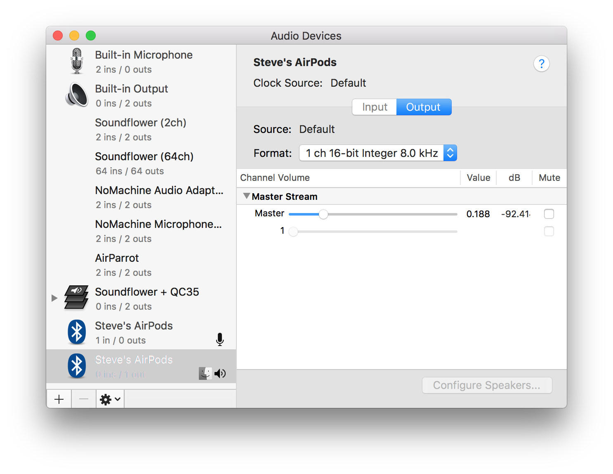

When Apple delayed the AirPods release, I was worried that they were vaporware.
Well, they weren't. I got my pair, and I bought in to looking like the San Francisco Tech Model Citizen while walking to work (listening to San Francisco Tech Model Citizen approved music, of course). And then I accidentally got another set of Bluetooth headphones, the noise-cancelling Bose QC35, great for the ambient noise in the San Francisco Tech Model Citizen's Open Office. I wasn't specifically looking for wireless headphones, but it seemed wrong to buy a brand new pair of headphones that required an adapter to work with my phone (Dear Apple: you win).
So, in the course of two and a half months I've switched completely to wireless headphones. It certainly feels like The Future but macOS isn't quite up to the task. Notably, when I connect a pair of Bluetooth headphones, the Mac usually automatically sets those headphones as both the system output device and the input device. Unfortunately, macOS then reduces the audio output samplerate to 8000 Hz, down from the usual 44100 Hz. I think this is a Bluetooth hardware limitation, but I'm not quite sure. Either way: it causes everything to sound like garbage.

There's an easy fix, though: once you've connected your AirPods or other BT Audio device, switch the input device back to the default input device (the "Internal Microphone").
That's annoying to do automatically, but there's a great tool called Hammerspoon that lets you automate lots of things like this on macOS. Here's the Hammerspoon script I whipped up (and on github):
-- Avoid automatically setting a bluetooth audio input device
lastSetOutputDeviceTime = os.time()
lastInputDevice = nil
function audioDeviceChanged(arg)
if arg == 'dOut' then
lastSetOutputDeviceTime = os.time()
elseif arg == 'dIn ' and os.time() - lastSetOutputDeviceTime < 2 then
inputDevice = hs.audiodevice.defaultInputDevice()
if inputDevice:transportType() == 'Bluetooth' then
internalMic = lastInputDevice or hs.audiodevice.findInputByName('Built-in Microphone')
internalMic:setDefaultInputDevice()
end
end
lastInputDevice = hs.audiodevice.defaultInputDevice()
end
hs.audiodevice.watcher.setCallback(audioDeviceChanged)
hs.audiodevice.watcher.start()
When you connect a Bluetooth audio device, this script changes the input device to the previously selected input device. If you actually want to use the microphone on the BT audio device, you can manually change the input device to the Bluetooth headphones, because the script only automatically switches away from those input devices within 2 seconds of an output device change.
I hope Apple comes up with a nicer way to manage this, but this is a nice and easy fix in the meantime.